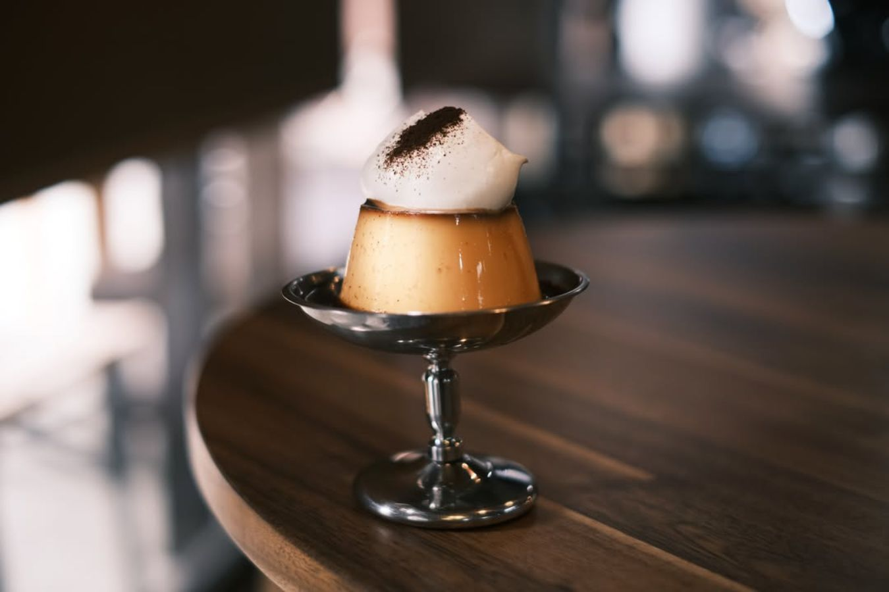
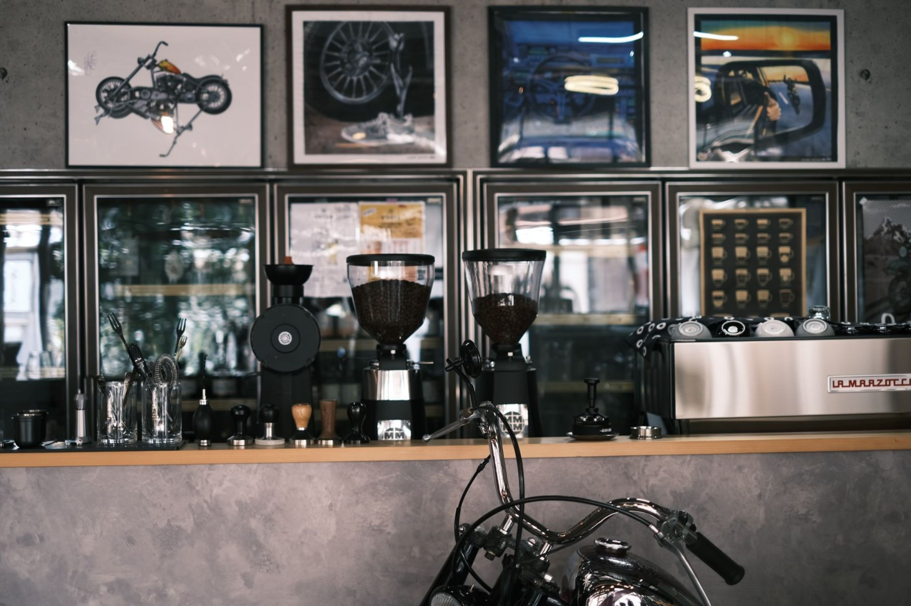

プリン
ほろ苦いカラメルの昭和レトロなプリンと、エスプレッソの効いたコーヒープリン。硬めの2種類が評判です。
COFFEE STAND — SHITAMACHI, KAWAGOE
木と珈琲の、居場所。
川越・志多町、老舗酒屋をリノベしたコーヒースタンド。
11:00–18:00（L.O.17:30）｜水曜＋不定休
ABOUT
蔵造りの街並みから少し北、氷川神社のちかく。築70年の老舗酒屋「柳屋酒店」の一角をリノベーションした、木のぬくもりのあるコーヒースタンドです。
「観光の喧騒を抜けて、ほっと一息」——そんな声に選ばれてきたお店。無機質さと木のぬくもりが心地よく調和した空間で、バリスタの淹れる一杯と、硬めのプリンやケーキが、ゆっくりの時間に寄り添います。テラス席はわんちゃんもご一緒に。

観光の喧騒を抜けて、ひと息。
SHOP INFO
| 店名 | Little Edo Coffee（リトルエドコーヒー） |
|---|---|
| 住所 | 埼玉県川越市志多町2-1 |
| アクセス | 本川越駅 徒歩約15分／氷川神社ちかく |
| 営業時間 | 11:00–18:00（L.O.17:30） |
| 定休日 | 水曜＋不定休 |
| 電話 | 049-222-1157 |
CONTACT
最新の営業日や本日のメニューはInstagramで発信されています。ランチ・ディナーのご予約は姉妹の @willowhouse_kawagoe へ。